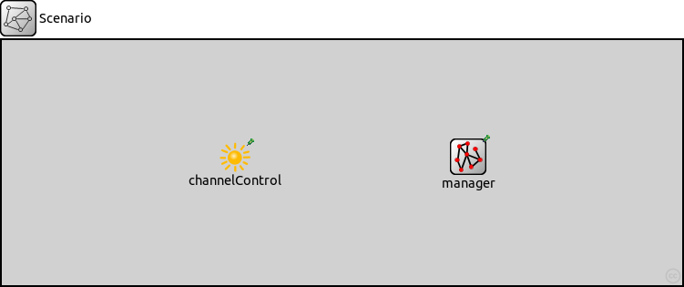
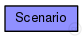
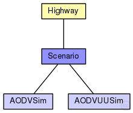

This documentation is released under the Creative Commons license
This documentation is released under the Creative Commons license(no description)
The following diagram shows usage relationships between types. Unresolved types are missing from the diagram. Click here to see the full picture.
The following diagram shows inheritance relationships for this type. Unresolved types are missing from the diagram. Click here to see the full picture.
| Name | Type | Description |
|---|---|---|
| Highway | compound module | (no description) |
| Name | Type | Description |
|---|---|---|
| AODVSim | network | (no description) |
| AODVUUSim | network | (no description) |
| Name | Value | Description |
|---|---|---|
| isNetwork |
| Name | Type | Default value | Description |
|---|---|---|---|
| channelControl.coreDebug | bool | false |
debug switch for core framework |
| channelControl.pMax | double | 20mW |
maximum sending power used for this network (in mW) |
| channelControl.sat | double | -110dBm |
signal attenuation threshold (in dBm) |
| channelControl.alpha | double | 2 |
path loss coefficient |
| channelControl.carrierFrequency | double | 2.4GHz |
base carrier frequency of all the channels (in Hz) |
| channelControl.numChannels | int | 1 |
number of radio channels (frequencies) |
| channelControl.propagationModel | string | "FreeSpaceModel" | |
| channelControl.maxInterferenceDistance | double | 450m | |
| manager.debug | bool | false |
emit debug messages? |
| manager.connectAt | double | 0s |
when to connect to TraCI server (must be the initial timestep of the server) |
| manager.firstStepAt | double | -1s |
when to start synchronizing with the TraCI server (-1: immediately after connecting) |
| manager.updateInterval | double | 1s |
time interval of hosts' position updates |
| manager.moduleType | string | "inet.nodes.wireless.WirelessHostSimplified" |
module type to be used in the simulation for each managed vehicle |
| manager.moduleName | string | "host" |
module name to be used in the simulation for each managed vehicle |
| manager.moduleDisplayString | string | "i=misc/node2;is=vs;r=0,,#707070,1" |
module displayString to be used in the simulation for each managed vehicle |
| manager.host | string | "localhost" |
sumo-launchd.py server hostname |
| manager.port | int | 9999 |
sumo-launchd.py server port |
| manager.launchConfig | xml |
launch configuration to send to sumo-launchd.py |
|
| manager.seed | int | -1 |
seed value to set in launch configuration, if missing (-1: current run number) |
| manager.autoShutdown | bool | true |
Shutdown module as soon as no more vehicles are in the simulation |
| manager.margin | int | 25 |
margin to add to all received vehicle positions |
| manager.roiRoads | string | "" |
which roads (e.g. "hwy1 hwy2") are considered to consitute the region of interest, if not empty |
| manager.roiRects | string | "" |
which rectangles (e.g. "0,0-10,10 20,20-30,30) are considered to consitute the region of interest, if not empty |
| manager.penetrationRate | double | 1 |
the probability of a vehicle being equipped with Car2X technology |
network Scenario extends Highway { }
This documentation is released under the Creative Commons license